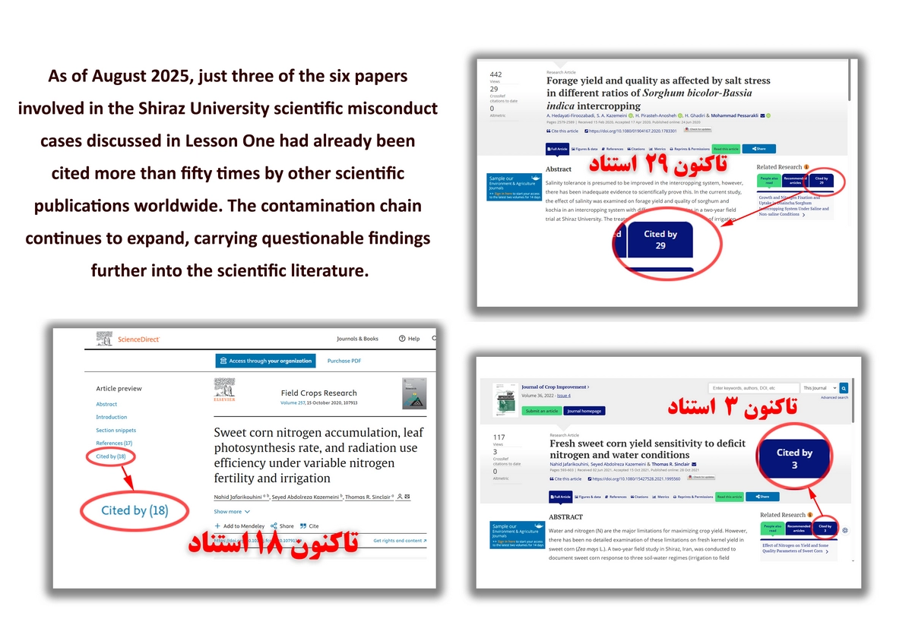
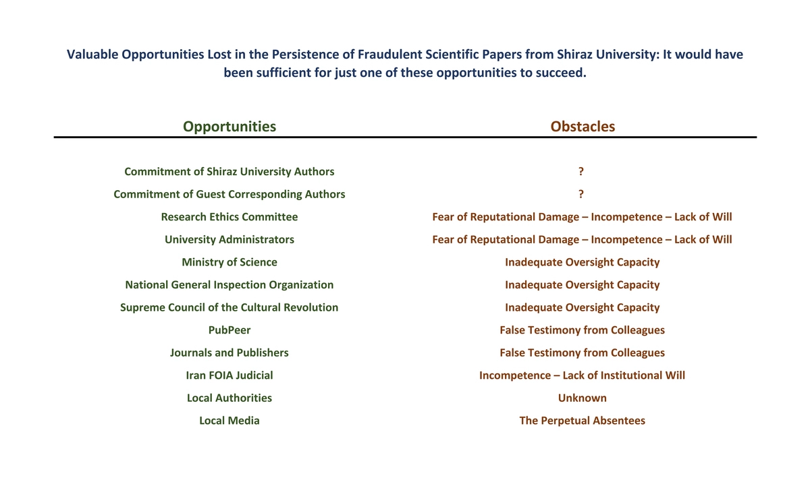
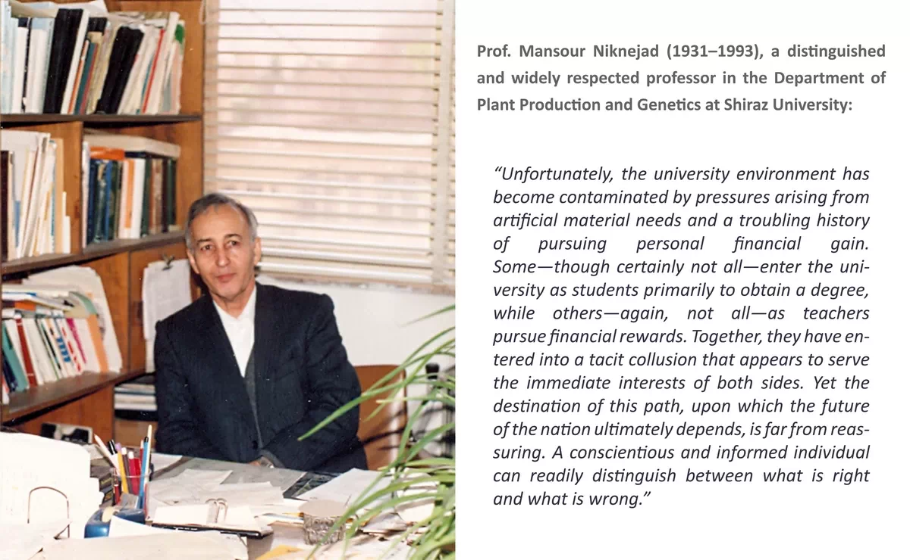
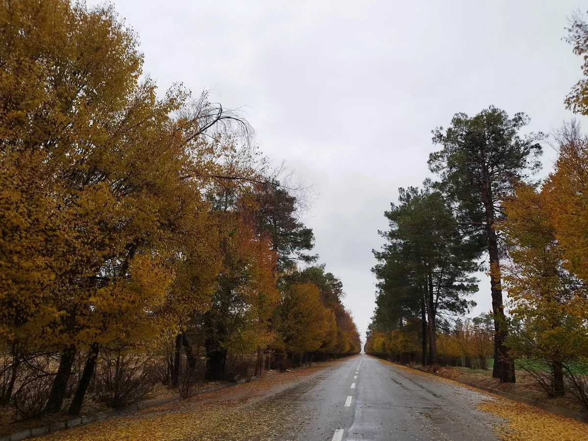

Every morning, ninety million Iranians board the bus of the Faculty of Agriculture.
We descend the winding Bajgah road and arrive at the university.
We sit behind our desks, switch on a dim seventy-year-old lamp, and begin to imagine.
What shall we plant today?
Wheat.
For two consecutive years, in mid-November, we sow five cultivars in carefully designed plots.
We apply different irrigation regimes.
We measure growth.
We monitor development.
We count spikes, grains, leaves, and tillers.
For months we stand beneath the cold winter sky and the fierce summer sun.
Then comes harvest.
Samples are dried.
Data are recorded.
Tables are prepared.
Graphs are drawn.
At last, we discover something wonderful:
One cultivar yielded three percent more grain than another while requiring less water.
We write a paper and send the news into the world.
Then we board the bus again and return home.
A joke?
Never.
The word “Iran” at the top of the paper assures us that it is no joke.
We were all there.
We all saw it.
Every one of us.
The authors.
The supervisors.
The department.
The university.
The committees.
The ministries.
The oversight bodies.
The witnesses.
The signatories.
Even the silent institutions watching from a distance.
All of us.
And yet scientific knowledge has a peculiar property.
Once published, it begins a life of its own.
The findings from the still-unretracted Shiraz University papers discussed throughout Lesson One have already been cited by other researchers.

Those papers are cited by additional papers.
The chain expands.
Claims become evidence.
Evidence becomes assumptions.
Assumptions become models.
Models influence future research.
Sometimes they influence policy.
Sometimes they influence practice.
A single unreliable result can travel remarkably far.
Researchers devote entire careers to improving crop yields by a single percentage point.
The integrity of agricultural science matters because the consequences extend beyond journals and universities.
They reach farms, food systems, and ultimately people.
This is why scientific misconduct matters.
Not because it violates abstract rules.
Not because it embarrasses institutions.
But because knowledge has consequences.
If science is to remain worthy of public trust, it must remain capable of correcting itself.
That is the first lesson.
And perhaps the last.


Postscript
The cases discussed in Lesson One concern a small number of papers originating from one university and one field of research.
They are important not because they are unique, but because they are ordinary.
Similar concerns arise every day in disciplines ranging from medicine and engineering to the social sciences and humanities.
The central question therefore remains unchanged:
When credible concerns are raised, does the scientific system possess both the ability and the willingness to correct itself?
Lesson One began as an attempt to answer that question.
Its conclusions are left to the reader.

The Autumn of the College of Agriculture, Shiraz University.